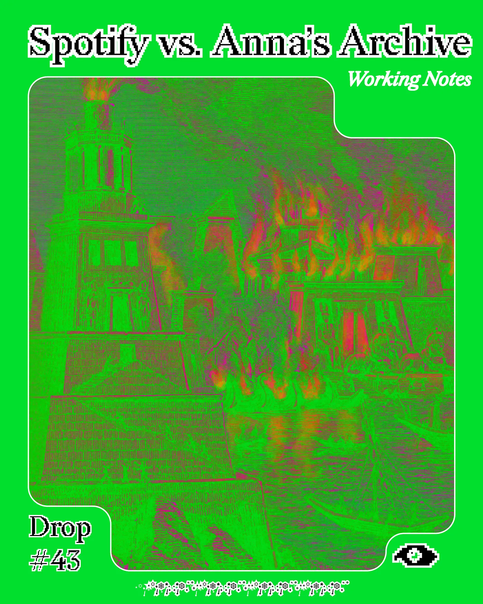
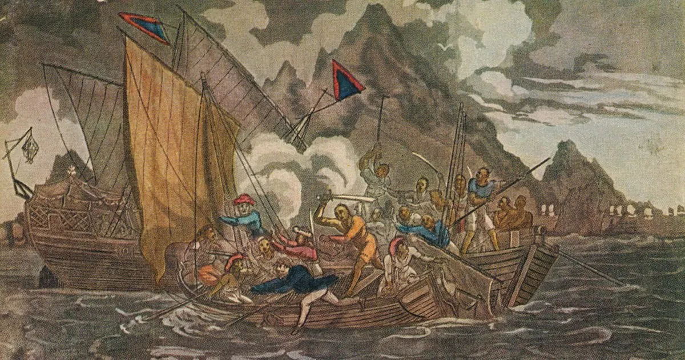
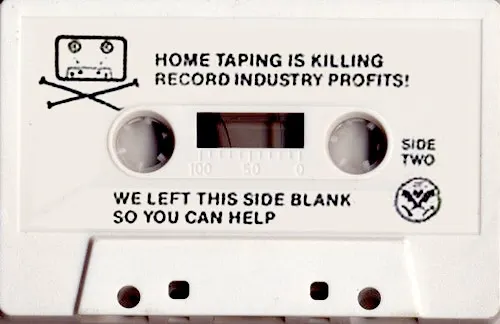
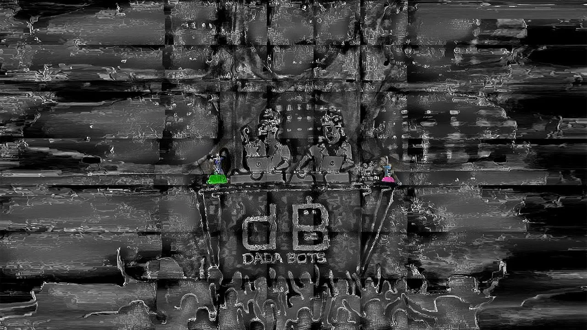

Working Notes
Drop #43 · December 26, 2025 · 10 min read
Hey everyone (▰˘◡˘▰)
On Christmas Eve morning, I quickly posted a small holiday greeting card on REINCANTAMENTO’s Instagram page. The card was also a somewhat celebratory comment on what I believe to be an important act of cultural activism that took place earlier this week: the action by Anna’s Archive team, the largest shadow library in history, against Spotify. The operation led to the liberation of 86 million audio files totaling 300 terabytes, now publicly distributed via torrent.
To my surprise, the post had a wide reach: many people “celebrated” with us Anna’s Archive’s Christmas gift, but a debate also broke out on our page. Beyond Instagram’s algorithmic serendipity, I think Anna’s action catalyzes several important points about the state of culture today, which explains the attention it attracted.
People’s (legitimate) concerns revolved around two axes:
First, a general judgment on Anna’s Archive team action, and therefore the classic question about the legitimacy of piracy. Is it right to pirate artistic material without the authors’ authorization? Is it right to share it for free?
Second, and far more interesting in my view, the question of what piracy means in the age of generative AI. Many are worried that the archives liberated by Anna’s will be used to train generative models without the permission of their original authors (as has already happened). At the end of 2025, the question seems to be, quoting our friend Simone Robutti: “Freedom of information always advantages those with more power to exploit it, and you can’t have open source genocide-free in this economic model.”
Since I’m convinced that Instagram comments are not the right place to carry on such a discussion, I’m putting together this flash piece (interrupting my reading of Kafka’s letters, certainly more soothing for the soul). I’m trying to reflect the plurality of opinions within REINCANTAMENTO and friends, hoping to foster the conversation further and allow for a healthier debate space. Let’s go.

Let's start from the facts. On December 20th, the Anna's Archive team published an article announcing they had backed up Spotify. They say:
We backed up Spotify (metadata and music files). It’s distributed in bulk torrents (~300TB), grouped by popularity.This release includes the largest publicly available music metadata database with 256 million tracks and 186 million unique ISRCs.It’s the world’s first “preservation archive” for music which is fully open (meaning it can easily be mirrored by anyone with enough disk space), with 86 million music files, representing around 99.6% of listens.
They argue that music is already relatively well preserved, but existing efforts have structural problems. First, they're too focused on popular artists. The long tail of lesser-known music only gets preserved when a single person cares enough to share it, and such files are often poorly seeded. Second, there's an obsession with audiophile-grade quality (lossless FLAC, etc.) that inflates file sizes, making it impossible to maintain a complete archive of all music ever produced. Third, there's no authoritative list of torrents aiming to represent all music in existence. The equivalent of their book torrent lists simply doesn't exist for music. And for those who use Anna’s Archive, you know how comprehensive their list of books, academic papers, and magazines truly is.
When the opportunity came to scrape Spotify at scale, they took it: a “humble attempt" to start such a preservation archive for music. Spotify doesn't have all the music in the world, they say, but it's a good start.
Most of all, the archive is fully available via torrent, meaning anyone with enough disk space can mirror it. While I’m writing this, on 26th December 2025, we’re just seeing the first step of this massive public archive program: the release of the metadata, which will be followed by:
[X] Metadata (Dec 2025)[ ] Music files (releasing in order of popularity)[ ] Additional file metadata (torrent paths and checksums)[ ] Album art[ ] .zstdpatch files (to reconstruct original files before we added embedded metadata)
So much for what happened. Now for what it means.
The Pirate Ethics

Some comments express direct frustration, following the lines of this argument: we artists already have our own archives; nobody asked our permission to make our music available for free without any contract or royalties. “Y’all just stole all of our music?? this is not the flex you think it is”. The rebellion seems to be against the musicians who willingly placed their music on Spotify, not against Spotify itself.
I’ve written about piracy in an article in the context of the project Meshdia (translated into Italian for L’Indiscreto). My argument was the following: piracy is not theft, but a form of civil disobedience against monopolistic media control. Throughout modern history, every new media technology triggers the same cycle: innovation enables decentralized sharing, then distributors and lawmakers respond by criminalizing these practices. But the fight against piracy has never been primarily driven by individual artists and creators. It’s championed by the industry’s gatekeepers: publishers, record labels, and movie studios. These intermediaries leverage their influence to shape copyright laws that protect their market control rather than creators’ interests. Copyright emerged not to protect creators, but to serve publishers’ interests, from the 1710 Statute of Anne onwards.
Piracy, as Alexandra Elbakyan (founder of Sci-Hub) argues, is production, not theft. When information is copied, it multiplies. The owner loses nothing. With stealing, one is deprived; with copying, new goods are produced. Projects like Sci-Hub, Karagarga, Library Genesis, and Anna’s Archive are not criminal enterprises but laboratories for alternative circulation, responses to predatory market practices, and forms of resistance against the progressive enclosure of digital commons.

From this perspective, what exactly is the gesture of Anna’s Archive? What kind of act is this?
As a musician and label owner, Frank says, I would want to have control and respect the will of my collaborators if they ask me to protect their products. But I can’t guarantee that, and I can’t pretend I can either. It was never our property the moment we published it online. Our only real property is direct remuneration through royalties and the sale of physical copies. Which doesn’t mean that if you want to burn CDs with my music, you can’t sell them.
We’re talking about Napster here, nothing really new. From Napster came iTunes and Spotify. And now that centralization returns to this new form, this new archive/Napster. Right or wrong, you have to deal with this somehow, so let’s talk about it without qualitative judgments.
Thus, we may read Anna’s Archive action more on the symbolic plane than the material one. After all, it’s very likely that much of the music “liberated” by the hacktivists was already circulating on shadow circuits (Soulseek, anyone?). The point, then, would be to make a performative gesture against platform capitalism and its self-proclaimed monopoly over human knowledge, similar to what Sci-Hub already did against academic publishing. Plus, a healthy reminder that scraping and piracy are still possible in today’s internet, and that platforms are far less secure than they want us to believe. A reassertion of political agency not to be underestimated.
Yet, one must also deconstruct the same pirate ideology that animates projects like Anna’s Archive and Sci-Hub, as Simone reminds us in REINCANTAMENTO group chat. This ideology is rooted in a worldview that emerged before the digital information era, and now faces systemic challenges it wasn’t designed to address.
The core tenets are familiar: information liberation as a moral good, the conviction that centralized public databases and free accessibility are inherently emancipatory. This vision has historical roots at the dawn of the information age. Throughout history, hiding or restricting information was a clear form of power and oppression, and thus, in that context, liberating data meant stripping tools of control from elites, whether in medicine, academia, or elsewhere.
But Simone’s point is that this vision has become naive. It doesn’t account for how power dynamics have shifted. And this leads us to the second point raised by our post: the issue of generative models scraping the Web.
Openness At the Time of AI
In a world dominated by data, those who possess the most powerful tools benefit the most from the free circulation of information. For corporations like Meta or OpenAI, a centralized, freely accessible database drastically reduces the labor required to train AI models. What once took years of painstaking data collection now takes a few days of downloading. The freedom of information, in other words, ends up advantaging those with more power to exploit it.
But then we must ask: is this really an advantage granted by Anna’s Archive intervention against Spotify? The streaming giant, which is notoriously under a boycott call for its ties with the military industry and its underpayment of artists, is no stranger to the exploitation of AI tools itself. There’s an entire Wikipedia entry dedicated to the issue of “fake” (read: synthetic, AI-generated) artists on Spotify, and an exceptional report on Harper’s Magazine documented the platform’s Perfect Fit Content program, which floods the service with cheap, algorithmically optimized background music to reduce royalty payouts to real musicians.
In other words, the fear that Anna’s Archive will serve as training data for generative models assumes that Spotify itself isn’t already deeply entangled with AI-generated content. The platform is clearly not a neutral victim here. It has actively shaped its ecosystem to favor synthetic production, deprioritize human artists, and extract maximum value from minimal royalty obligations. While many already know this, it’s worth restating to establish a clear framing: we are not dealing with a noble platform under attack by “pirates”.
Finally, one more point. Simone reminds me of the class perspective: musicians here behave like atomized small owners, caught in their enterprecarity, who (legitimately) ask for some defense of their property rights, attacked both by hackers and by the big monopolists of platforms and AI. Because from these property rights, in this case IP, comes a rent, and from this rent, independent artists and label owners try to make a living. Again, right or wrong, this is what’s happening.
Here at REINCANTAMENTO, however, we’re not interested in reinforcing self-pitying narratives about the role of artists in society. Instead, we want to offer, as Simone puts it, “an actionable strategic horizon for musicians, however imperfect”. This is not the right space to address this topic in detail, but we’ll return to it. In the meantime, we invite anyone who landed here because of this story to get in touch if you’re interested in fostering organizing practices in this field.

When it comes to generative AI and music, there are glimpses of “actionable strategic horizons” emerging. What comes to mind is, needless to say, the work of Holly Herndon and Matt Dryhurst, but also projects like Dadabots and others who are actively experimenting with what a different relationship between artists and AI models might look like. These are attempts to navigate the tension rather than resolve it.
In their recent book-catalogue All Media is Training Data, Herndon and Dryhurst offer a path toward a horizon in which artists take an active role in data collection, training, and data governance practices. The duo wants to make the process of training generative AI visible, deliberate, even ritualized. What if data collection itself became an art form? What kind of objects, schemas, or protocols could we produce to give shape to these practices? They reference Alan Lomax’s field recordings, where context (the chickens in the background, the car engine powering the rig) became inseparable from the music itself. Similarly, when making a model, capture information in as many dimensions as possible. And crucially, leave room for human decision-making, for augmentation, and subversion.
This is just one example among many possible ones. This piece doesn’t aim to provide answers. It aims to open questions, to sketch hypotheses. About different ecosystems of cultural organization. About what forms of collective practice might still be possible in the wreckage of platform capitalism. About how artists might move from being atomized small owners defending their shrinking plots of intellectual property, to becoming active participants in shaping the infrastructures that govern their work.
This is why I celebrated Anna’s Archive gesture. Not because it’s unambiguously “good” or “right.” But because it makes something happen. Quoting Erik Bordeleau’s words from these pages: “To treat collective memory not as something to preserve, but as a practice itself – ephemeral, uncontained, and always already in motion.”
If the archive can survive the platform, what else might be possible? What we do with that question is up to us.